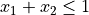
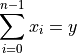

odtlearn.utils.mip_cbc#
Python-MIP interface to the COIN-OR Branch-and-Cut solver CBC
Module Contents#
Classes#
Functions#
|
|
|
Attributes#
- class odtlearn.utils.mip_cbc.SolverCbc(model: mip.Model, name: str, sense: str, verbose: bool)[source]#
Bases:
mip.SolverThe solver is an abstract class with the solver independent API to communicate with the solver engine
- add_var(obj: numbers.Real = 0, lb: numbers.Real = 0, ub: numbers.Real = float('inf'), coltype: str = 'C', column: Optional[mip.Column] = None, name: str = '')[source]#
- conflicting(e1: Union[mip.LinExpr, mip.Var], e2: Union[mip.LinExpr, mip.Var]) bool[source]#
Checks if two assignment to binary variables are in conflict, returns none if no conflict graph is available
- conflicting_nodes(v1: Union[mip.Var, mip.LinExpr]) Tuple[List[mip.Var], List[mip.Var]][source]#
Returns all assignment conflicting with the assignment in v1 in the conflict graph.
- get_objective_const() numbers.Real[source]#
- get_max_seconds() numbers.Real[source]#
- set_max_seconds(max_seconds: numbers.Real)[source]#
- var_set_obj(var: mip.Var, value: numbers.Real)[source]#
- generate_cuts(cut_types: Optional[List[mip.CutType]] = None, depth: int = 0, npass: int = 0, max_cuts: int = maxsize, min_viol: numbers.Real = 0.0001) mip.CutPool[source]#
- get_objective_value() numbers.Real[source]#
- get_log() List[Tuple[numbers.Real, Tuple[numbers.Real, numbers.Real]]][source]#
- get_objective_bound() numbers.Real[source]#
- var_get_x(var: mip.Var) Optional[numbers.Real][source]#
Assumes that the solution is available (should be checked before calling it
- get_objective_value_i(i: int) numbers.Real[source]#
- var_get_xi(var: mip.Var, i: int) numbers.Real[source]#
- var_get_rc(var: mip.Var) numbers.Real[source]#
- var_get_lb(var: mip.Var) numbers.Real[source]#
- var_set_lb(var: mip.Var, value: numbers.Real)[source]#
- var_get_ub(var: mip.Var) numbers.Real[source]#
- var_set_ub(var: mip.Var, value: numbers.Real)[source]#
- var_get_branch_priority(var: mip.Var) numbers.Real[source]#
- constr_get_rhs(idx: int) numbers.Real[source]#
- constr_set_rhs(idx: int, rhs: numbers.Real)[source]#
- var_get_obj(var: mip.Var) numbers.Real[source]#
- add_sos(sos: List[Tuple[mip.Var, numbers.Real]], sos_type: int)[source]#
- set_start(start: List[Tuple[mip.Var, numbers.Real]]) None[source]#
- get_cutoff() numbers.Real[source]#
- set_cutoff(cutoff: numbers.Real)[source]#
- get_mip_gap_abs() numbers.Real[source]#
- set_mip_gap_abs(allowable_gap: numbers.Real)[source]#
- get_mip_gap() numbers.Real[source]#
- set_mip_gap(allowable_ratio_gap: numbers.Real)[source]#
- set_processing_limits(max_time: numbers.Real = mip.INF, max_nodes: int = mip.INT_MAX, max_sol: int = mip.INT_MAX, max_seconds_same_incumbent: int = mip.INT_MAX, max_nodes_same_incumbent: float = mip.INF)[source]#
- constr_get_pi(constr: mip.Constr) Optional[numbers.Real][source]#
- constr_get_slack(constr: mip.Constr) Optional[numbers.Real][source]#
- class odtlearn.utils.mip_cbc.ModelOsi(osi_ptr)[source]#
Bases:
mip.ModelMixed Integer Programming Model
This is the main class, providing methods for building, optimizing, querying optimization results and re-optimizing Mixed-Integer Programming Models.
To check how models are created please see the examples included.
- Attributes:
vars(mip.VarList): list of problem variables (
Var) constrs(mip.ConstrList): list of constraints (Constr)- Examples:
>>> from mip import Model, MAXIMIZE, CBC, INTEGER, OptimizationStatus >>> model = Model(sense=MAXIMIZE, solver_name=CBC) >>> x = model.add_var(name='x', var_type=INTEGER, lb=0, ub=10) >>> y = model.add_var(name='y', var_type=INTEGER, lb=0, ub=10) >>> model += x + y <= 10 >>> model.objective = x + y >>> status = model.optimize(max_seconds=2) >>> status == OptimizationStatus.OPTIMAL True
- add_constr(lin_expr: mip.LinExpr, name: str = '') mip.Constr[source]#
Creates a new constraint (row).
Adds a new constraint to the model, returning its reference.
- Args:
lin_expr(mip.LinExpr): linear expression name(str): optional constraint name, used when saving model to
lp or mps files
- priority(mip.constants.ConstraintPriority): optional constraint
priority
Examples:
The following code adds the constraint  (x1 and x2 should be created first using
add_var()):m += x1 + x2 <= 1
Which is equivalent to:
m.add_constr( x1 + x2 <= 1 )
Summation expressions can be used also, to add the constraint  and name this constraint
cons1:m += xsum(x[i] for i in range(n)) == y, "cons1"
Which is equivalent to:
m.add_constr( xsum(x[i] for i in range(n)) == y, "cons1" )
- Return type
mip.Constr
- class odtlearn.utils.mip_cbc.SolverOsi(model: mip.Model, osi_ptr=ffi.NULL)[source]#
Bases:
mip.SolverInterface for the OsiSolverInterface, the generic solver interface of COIN-OR. This solver has a restricted functionality (comparing to SolverCbc) and it is used mainly in callbacks where only the pre-processed model is available
- add_var(name: str = '', obj: numbers.Real = 0, lb: numbers.Real = 0, ub: numbers.Real = INF, var_type: str = CONTINUOUS, column: mip.Column = None)[source]#
- abstract get_objective_bound() numbers.Real[source]#
- get_objective_const() numbers.Real[source]#
- get_objective_value() numbers.Real[source]#
- get_log() List[Tuple[numbers.Real, Tuple[numbers.Real, numbers.Real]]][source]#
- abstract get_objective_value_i(i: int) numbers.Real[source]#
- abstract set_start(start: List[Tuple[mip.Var, numbers.Real]])[source]#
- abstract set_objective_const(const: numbers.Real)[source]#
- abstract set_processing_limits(max_time: numbers.Real = INF, max_nodes: int = maxsize, max_sol: int = maxsize)[source]#
- abstract get_max_seconds() numbers.Real[source]#
- abstract set_max_seconds(max_seconds: numbers.Real)[source]#
- abstract get_cutoff() numbers.Real[source]#
- abstract set_cutoff(cutoff: numbers.Real)[source]#
- abstract get_mip_gap_abs() numbers.Real[source]#
- abstract set_mip_gap_abs(mip_gap_abs: numbers.Real)[source]#
- abstract get_mip_gap() numbers.Real[source]#
- abstract set_mip_gap(mip_gap: numbers.Real)[source]#
- constr_get_pi(constr: mip.Constr) Optional[numbers.Real][source]#
- var_get_branch_priority(var: mip.Var) numbers.Real[source]#
- var_set_branch_priority(var: mip.Var, value: numbers.Real)[source]#
- var_get_lb(var: mip.Var) numbers.Real[source]#
- var_set_lb(var: mip.Var, value: numbers.Real)[source]#
- var_get_ub(var: mip.Var) numbers.Real[source]#
- var_set_ub(var: mip.Var, value: numbers.Real)[source]#
- var_get_obj(var: mip.Var) numbers.Real[source]#
- var_set_obj(var: mip.Var, value: numbers.Real)[source]#
- var_get_rc(var: mip.Var) numbers.Real[source]#
- var_get_x(var: mip.Var) numbers.Real[source]#
Assumes that the solution is available (should be checked before calling it
- abstract var_get_xi(var: mip.Var, i: int) numbers.Real[source]#